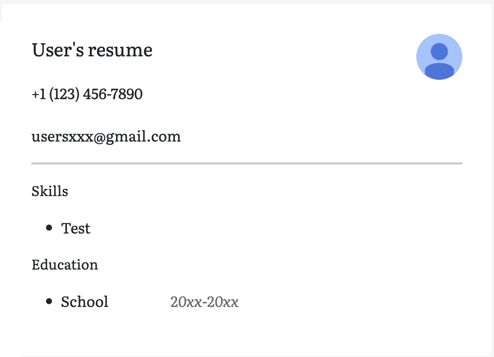
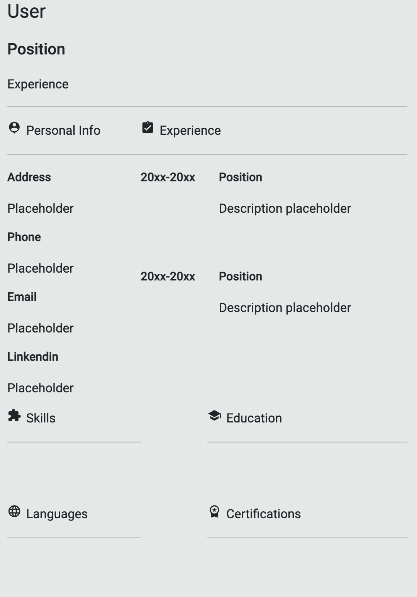

<h2>Choose a template to download:</h2>
<section>
  <h2>Clean</h2>
  <h2>Serif</h2>
  <h2>Classic</h2>
  <!---<app-clean class="hover"></app-clean>
  <app-serif class="hover"></app-serif>
  <app-classic class="hover"></app-classic>--->
  
  
  
  <a mat-stroked-button color = "primary" [routerLink]="['/render']" [queryParams]="{'template' : 'clean'}">Clean</a>
  <a mat-stroked-button color = "primary" [routerLink]="['/render']" [queryParams]="{'template' : 'serif'}">Serif</a>
  <a mat-stroked-button color = "primary"[routerLink]="['/render']" [queryParams]="{'template' : 'classic'}">Classic</a>
  <h2>Cubic</h2>
  <h2>Crisp</h2>
  <h2>Simple/Traditional</h2>
  
  
  
  <a mat-stroked-button color = "primary" [routerLink]="['/render']" [queryParams]="{'template': 'cubic'}">Cubic</a>
  <a mat-stroked-button color = "primary" [routerLink]="['/render']" [queryParams]="{'template': 'crisp'}">Crisp</a>
  <a mat-stroked-button color = "primary" [routerLink]="['/render']" [queryParams]="{'template': 'simple'}">Simple</a>
  <h2>Design</h2>
  <h2></h2>
  <h2></h2>
  
  
  
  <a mat-stroked-button color = "primary" [routerLink]="['/render']" [queryParams]="{'template': 'design'}">Design</a>

</section>